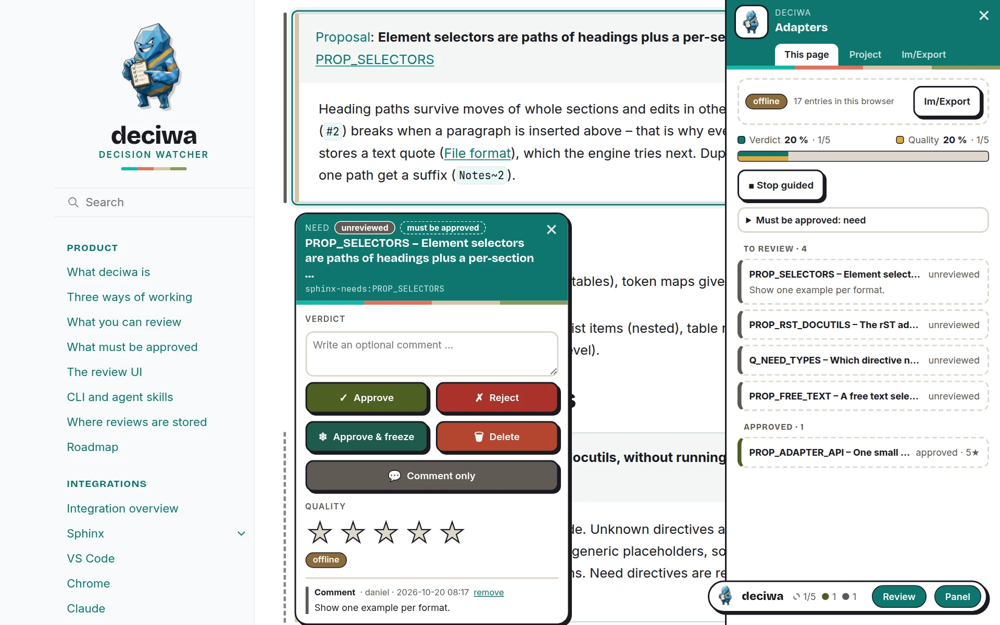
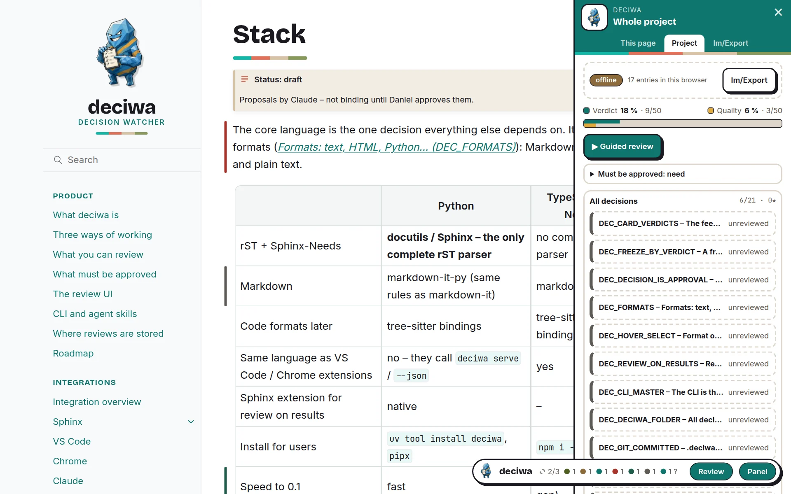

Die Review-Oberfläche¶
Dieselbe Oberfläche in jeder Integration; Farben und Schriften sind die von danwos (deciwa nutzt die danwos-Far... (DEC_DANWOS_TOKENS)).
Der deciwa-Button¶
Unten rechts sitzt ein rundes deciwa-Logo. Fahr mit der Maus darüber, um die Zähler und die zwei Schalter zu sehen:
Review – schaltet das Reviewen ein: Umrisse beim Überfahren, die Feedback-Karte und die Tasten. Standardmäßig aus, damit sich die Seite normal liest.
Panel – die Liste allen Feedbacks.
Solange Review oder Panel an sind, bleibt der Button offen.
Feedback-Karte¶
Klick auf ein Element (oder drück eine Taste, während du darüber bist), um seine Karte am Element zu öffnen (Die Feedback-Karte am Eleme... (DEC_FEEDBACK_CARD)) – neben dem Text, wenn Platz ist, sonst darunter, darüber nur am Ende der Seite; sie verdeckt das Element nie:
eine Leiste mit dem Element, seinem Zustand und ob es freigegeben werden muss,
eine Frage, die die KI dazu gestellt hat – antworte mit Ja, Nein oder in Worten,
Verdict – ein optionaler Kommentar, dann freigeben, ablehnen, freigeben & einfrieren, löschen – der Kommentar geht mit dem Urteil mit – oder Comment only, um den Kommentar ohne Urteil zu speichern,
Quality – null bis fünf Sterne,
der Verlauf, mit der alten Formulierung geänderter Texte.
Zieh die Karte an ihrer Leiste weg, wenn sie im Weg ist; die nächste Karte öffnet sich wieder an ihrem üblichen Platz. Ein Klick neben den Inhalt, Esc oder × schließt die Karte.
Beim Reviewen öffnet ein Klick auf ein Element immer seine Karte, auch wenn das Element ein Link ist oder einen enthält; Ctrl/Cmd + Klick folgt dem Link. Links außerhalb des Inhalts, etwa die Navigation, funktionieren wie gewohnt.

Die Karte eines freigegebenen Needs: Kommentar, Urteile, Sterne und Verlauf.¶
Auf Smartphones und Tablets¶
Tippen statt Überfahren: tipp auf das deciwa-Logo für die Schalter, auf ein Element für seine Karte und daneben, um sie zu schließen. Buttons und Sterne sind größer, Tasten werden nicht angezeigt, und das Panel nimmt den ganzen Bildschirm ein – wählst du einen Eintrag, schließt es sich und öffnet die Karte.

Auf dem Smartphone: tipp auf ein Element, die Karte öffnet sich darunter.¶
Tasten¶
Taste |
Bewirkt |
|---|---|
|
freigeben |
|
ablehnen |
|
freigeben & einfrieren |
|
löschen |
|
Qualitätssterne |
|
Kommentar schreiben |
|
nur Kommentar – den Kommentar ohne Urteil speichern |
|
das übergeordnete Element auswählen |
|
einem Link folgen statt reviewen |
|
geführtes Review an/aus |
|
nächstes / vorheriges offenes Element |
|
Review an/aus |
|
Panel an/aus |
|
die Karte schließen |
Geführtes Review¶
▶ Guided review im Panel (oder v) geht durch jedes Element, das freigegeben werden muss und noch kein Urteil hat: die Karte öffnet sich am ersten, und nach jedem Urteil folgt das nächste – auf dieser Seite, dann auf den nächsten Seiten. j / k springen vor und zurück (auch ohne geführtes Review); Stop guided im Panel oder v beendet es. Sterne und Notizen gehen nicht weiter; es bleibt über Seiten hinweg an, bis du es stoppst.

Geführtes Review: die Karte steht am nächsten Element ohne Urteil.¶
Zustandsbalken¶
Ein farbiger Balken neben jedem Element mit Feedback zeigt seinen Zustand; ein ? markiert eine offene Frage; eine graue gestrichelte Linie markiert ein Element, das noch freigegeben werden muss.

Farbige Balken für geprüfte Elemente, graue gestrichelte Linien für Pflicht-Elemente, die noch offen sind.¶
Panel¶
This page – ein Balken mit zwei Anteilen der Pflicht-Elemente (mit Urteil, mit Sternen), die Review-Regeln, was noch kein Urteil hat, und alles Feedback der Seite, nach Zustand gruppiert.
Project – dasselbe für jede Seite; ein Klick springt zum Element auf seiner Seite.
Im/Export – alle Review-Daten des Projekts als eine deciwa-Datei herunterladen, mit Show hineinschauen oder eine laden: das Panel zeigt, was drin ist (Exportzeitpunkt, letzte Änderung, Einträge, Autoren, Quellen), bevor sie die aktuellen Daten ersetzt. Mit Server ist alles schon gespeichert; ohne Server verlässt ein Review so den Browser – siehe Offline-Review.
Das Panel bleibt über Seiten hinweg offen.

This page – Abdeckung von Urteilen und Qualität, Review-Regeln, was noch offen ist.¶

Project – jede Seite mit dem, was offen ist; ein Klick springt dorthin.¶

Im/Export – eine deciwa-Datei exportieren, anzeigen oder laden.¶